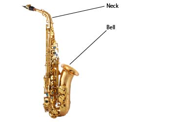

Saxoscope is the most revolutionary product in the world of jazz music. Our compact and simple design makes switching between instruments a breeze. Just unscrew the bell and the neck and replace with other parts. It's that easy!

About Us
Welcome to Saxoscope, where we specialize in providing high-quality saxophones that can be quickly and easily switched out for a different one. Our founder, Joseph Farrell, is a saxophone player and a deep understanding of the needs of musicians, which has driven the creation of our unique line of saxophones.
Our company is dedicated to providing musicians with the best possible playing experience. We believe that having the ability to switch out saxophones quickly and seamlessly is an essential feature that allows musicians to focus on their craft and perform at their highest level.
At our company, we place a strong emphasis on quality and craftsmanship. All of our saxophones are constructed with the finest materials and undergo rigorous testing to ensure they meet our high standards. We are committed to providing musicians with an instrument that not only sounds great but also feels comfortable and natural to play.
In addition to our dedication to quality, we pride ourselves on our commitment to customer service. We believe in building lasting relationships with our customers and providing them with the support they need to succeed. Our knowledgeable staff is always available to answer questions and provide guidance to help musicians get the most out of their saxophones.
At Saxoscope, we are passionate about music and believe that every musician deserves the best possible instrument. We are proud to offer our unique line of saxophones that can be switched out quickly and easily, providing musicians with the flexibility they need to perform at their best.